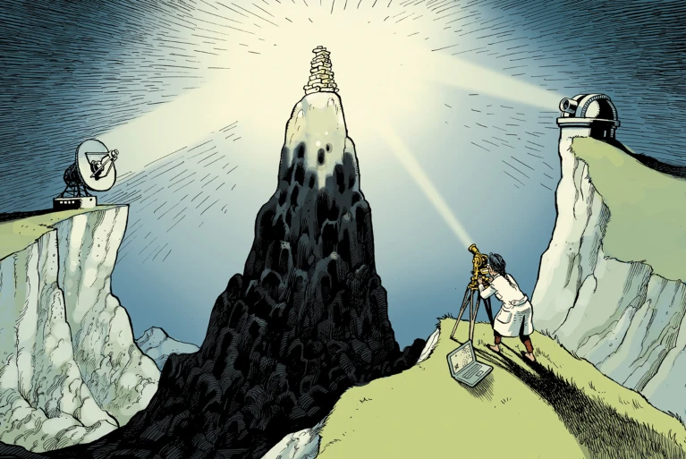

TỔNG QUAN Y VĂN
TS. BS. Phùng Khánh Lâm
Bộ môn Dịch tễ học, Khoa YTCC, ĐHYD TPHCM
10/11/2022
Mục tiêu bài giảng
- Nhận thức được tầm quan trọng của việc thực hiện tổng quan y văn
- Liệt kê được 4 giai đoạn trong quá trình thực hiện tổng quan y văn
- Biết cách lập dàn ý cho tổng quan y văn
- Biết cách tìm tài liệu tham khảo phù hợp cho tổng quan y văn
- Biết cách phân tích và tổng hợp thông tin từ tài liệu tham khảo
Nội dung
- Vì sao cần làm tổng quan y văn?
- Làm tổng quan y văn như thế nào?
- Lập dàn ý cho tổng quan y văn
- Tìm tài liệu tham khảo
- Tổng hợp tài liệu tham khảo
- Viết tổng quan y văn
- Tóm tắt nội dung chính
Thuyết trình, thảo luận nhóm
Tài liệu tham khảo
Chasan-Taber, L. (2014). Writing Dissertation and Grant Proposals: Epidemiology, preventive medicine and biostatistics.
Làm việc theo nhóm
15 phút
“Tổng quan y văn” về Sức khoẻ tâm thần ở trẻ vị thành niên nhiễm HIV
Ghi chép lại quá trình làm việc (làm việc như thế nào?)
Vì sao cần làm tổng quan y văn?
Vì sao cần làm tổng quan y văn?


Replication crisis
Open Science Collaboration (2015). Science. https://doi.org/10.1126/science.aac4716
Precognition
Bem, D. J. (2011). Journal of Personality and Social Psychology, 100(3), 407–425.
Precognition
Bem, D. J. (2011). Journal of Personality and Social Psychology, 100(3), 407–425.
Precognition
Bem, D. J. (2011). Journal of Personality and Social Psychology, 100(3), 407–425.

Precognition
Bem, D. J. (2011). Journal of Personality and Social Psychology, 100(3), 407–425.
Precognition
Bem, D. J. (2011). Journal of Personality and Social Psychology, 100(3), 407–425.
Precognition
Ritchie, S. J., Wiseman, R., & French, C. C. (2012). PLOS ONE, 7(3), e33423.
Y văn
Nghiên cứu đã thực hiện
Nghiên cứu được công bố “không chính thức”
Nghiên cứu được công bố “chính thức”
Sai lệch (publication bias)
- Tác giả
- Tạp chí, nhà xuất bản
Tổng quan y văn
Là một quá trình lặp đi lặp lại, nhằm:
- Cung cấp một tổng quan toàn diện và cập nhật về một chủ đề nào đó
- Cung cấp cơ sở nền tảng (nội dung và phương pháp) cho một nghiên cứu
- Bàn luận
Khoảng trống nghiên cứu (research gap)
Làm tổng quan y văn như thế nào?
Các dạng tổng quan y văn
- Critical review
- Literature review
- Mapping review/systematic map
- Meta-analysis
- Mixed studies review/mixed methods review
- Overview
- Qualitative systematic review/qualitative evidence synthesis
- Rapid review
- Scoping review
- State-of-the-art review
- Systematic review
- Systematic search and review
- Systematized review
- Umbrella review
- Realist review
Grant, M. J., & Booth, A. (2009). Health Information & Libraries Journal, 26(2), 91–108. https://doi.org/10.1111/j.1471-1842.2009.00848.x
Các bước làm tổng quan y văn
- Lập dàn ý
- Tìm tài liệu tham khảo
- Đọc và tổng hợp tài liệu tham khảo
- Viết
Lập dàn ý
- Phụ thuộc vào mục tiêu và câu hỏi nghiên cứu cụ thể
- Lợi ích
- Giúp tập trung, không lan man
- Giúp không bị lạc lối giữa rừng thông tin của y văn
Lập dàn ý: mục tiêu - câu hỏi nghiên cứu
PICO
- P (Population)
- I/E (Intervention/Exposure)
- C (Comparison/Control)
- O (Outcome)
Cụ thể
Tập trung (không quá rộng)
Lập dàn ý: gợi ý (về dịch tễ học)
- Tầm quan trọng (về khía cạnh y tế công cộng) của bệnh (WHY?)
- Cơ chế giải thích cho mối quan hệ giữa phơi nhiễm và bệnh (HOW?)
- Các nghiên cứu dịch tễ học về mối quan hệ giữa phơi nhiễm và bệnh (WHAT? HOW MUCH?)
- Tóm tắt những điểm mới và nổi bật (SO WHAT?)
Lập dàn ý: gợi ý (tiểu luận)
- Tầm quan trọng của bệnh (Dịch tễ học mô tả)
- Các yếu tố liên quan đến bệnh (Dịch tễ học phân tích)
- Các biện pháp can thiệp dự phòng, điều trị (Dịch tễ học can thiệp)
- Điểm mạnh/điểm yếu trong y văn
Tìm tài liệu tham khảo
Lựa chọn cơ sở dữ liệu phù hợp
Nguồn thông tin gốc (empirical research report): có thông tin chi tiết về số liệu và phương pháp, giúp chứng minh cho khoảng trống nghiên cứu
Nguồn thông tin thứ cấp (sách, báo tin tức): ít thông tin chi tiết, mô tả tổng quát về kết quả
Loại tài liệu phù hợp
Tầm quan trọng (về khía cạnh y tế công cộng) của bệnh
- Số hiện mắc/mới mắc hiện nay
- Sự thay đổi của số hiện mắc/mới mắc theo thời gian
- Số liệu quốc gia/khu vực/nhóm dân số
- Hậu quả của bệnh: bệnh đi kèm/tử vong
- Các yếu tố nguy cơ
Cơ chế giải thích cho mối quan hệ giữa phơi nhiễm và bệnh
- Cơ chế có thể giải thích cách phơi nhiễm tác động đến bệnh
- Tránh mô tả phơi nhiễm và bệnh một cách độc lập
Các nghiên cứu dịch tễ học về mối quan hệ giữa phơi nhiễm và bệnh
- Các nghiên cứu dịch tễ học đã/đang thực hiện có đánh giá về mối quan hệ giữa phơi nhiễm và bệnh
- Mục tiêu chính/ mục tiêu phụ
Kết quả tìm kiếm
Quá ít nghiên cứu:
- mới
- không đáng quan tâm
Quá nhiều nghiên cứu:
- rất đáng quan tâm
- không mới –> Tiêu chí Hills: tính nhất quán (consistency)
Quá ít nghiên cứu
Cần mở rộng phạm vi tìm kiếm
- Thêm từ đồng nghĩa/các chủ đề liên quan, dùng OR
- Mở rộng giới hạn về thời gian (trong vòng 10 năm, 20 năm)
- Nghiên cứu về cùng yếu tố phơi nhiễm nhưng bệnh tương đương
- Nghiên cứu về cùng bệnh nhưng yếu tố phơi nhiễm tương đương
Quá nhiều nghiên cứu
Cần giới hạn phạm vi tìm kiếm
- Thêm từ khoá, dùng AND
- Giới hạn nơi xuất hiện của từ khoá
- Giới hạn về loại tạp chí
- Giới hạn về thời gian (trong vòng 5 năm)
- Tìm các tài liệu chính (các bài tổng quan)
Các bước tìm tài liệu tham khảo
- Lựa chọn cơ sở dữ liệu
- Lựa chọn chiến lược tìm kiếm
- Xây dựng câu lệnh tìm kiếm
- Tìm kiếm
- Lọc tài liệu
Lựa chọn cơ sở dữ liệu
Lựa chọn chiến lược tìm kiếm
Tìm kiếm rộng
- Dùng từ khoá khái quát, không chuyên biệt
- Dùng từ đồng nghĩa
- Không sử dung các giới hạn
- Dùng “OR”
Tìm kiếm hẹp
- Dùng thuật ngữ, từ khoá chuyên biệt
- Sử dung các giới hạn
- Dùng “AND”
- PubMed: dùng MESH, PubMed Clinical Queries
- Dùng DOI
Công cụ tìm kiếm
- PubMed
- Google Scholar
- EMBASE
- Scopus
- Web of Science
Tìm kiếm tài liệu
MeSH (PubMed)
Trích dẫn trực tiếp
- Danh mục tài liệu tham khảo (backward citation)
- Được trích dẫn (forward citation)
Tài liệu giống nhau (similar articles)
MeSH
MeSH
Trích dẫn trực tiếp
- Danh mục tài liệu tham khảo (backward citation)
- Được trích dẫn (forward citation)
Cecile J.W. Janssens. Literature Review for Student Theses
Forward citation
Forward citation
Forward citation

Tài liệu giống nhau (similar articles)
Tài liệu giống nhau (similar articles)
Tài liệu giống nhau (similar articles)
Lọc tài liệu
Lọc lại các tài liệu thực sự liên quan
Đọc lướt
- Tóm tắt
- Phần mở đầu (đoạn cuối)
- Bảng/Biểu đồ
- Phần bàn luận/kết luận (đoạn đầu, đoạn cuối)
Đảm bảo danh sách tài liệu: đầy đủ, cập nhật
Tổng hợp tài liệu tham khảo
Tổng hợp tài liệu tham khảo
Tạo ra bảng tóm tắt về tài liệu tham khảo
Mục tiêu
- Khuynh hướng, cấu trúc trong y văn
- Xác định khoảng trống kiến thức/nghiên cứu
Bảng tóm tắt
Các thông tin chính
- Tác giả
- Năm xuất bản
- Thiết kế nghiên cứu
- Dân số nghiên cứu (cỡ mẫu, địa điểm, đặc điểm)
- Phơi nhiễm (định nghĩa, cách đo lường)
- Bệnh (định nghĩa, cách đo lường)
- Kết quả (số đo, khoảng tin cậy, trị số p)
- Các biến số liên quan
Một bệnh - Nhiều yếu tố phơi nhiễm: mỗi yếu tố phơi nhiễm một bảng
Nhiều bệnh - một yếu tố phơi nhiễm: mỗi bệnh một bảng
Bảng tóm tắt (ví dụ)
Sử dụng bảng tóm tắt
Synthesis \(\neq\) Summary
Không chỉ để tóm lược thông tin, mục tiêu chính là xác định khoảng trống nghiên cứu
Xác định khuynh hướng/điểm chung/điểm yếu qua các tài liệu
- Thiết kế
- Phương pháp
- Dân số nghiên cứu
- Cỡ mẫu
- Kết quả (tương đồng/khác biệt)
- Số lượng nghiên cứu
Mối quan hệ giữa PHƯƠNG PHÁP & KẾT QUẢ
- So sánh kết quả giữa các nhóm tài liệu (thiết kế/phương pháp/dân số/cỡ mẫu)
Viết tổng quan y văn
Viết tổng quan y văn
Tầm quan trọng (về khía cạnh y tế công cộng) của bệnh
- Số đo bệnh trạng
- Hậu quả
- Yếu tố nguy cơ
Cơ chế giải thích cho mối quan hệ giữa phơi nhiễm và bệnh
- Giải thích cơ chế (Sơ đồ tóm tắt)
Các nghiên cứu dịch tễ học về mối quan hệ giữa phơi nhiễm và bệnh
- Tổng quan về số lượng/thiết kế của các nghiên cứu đã thực hiện
- Tóm tắt (phương pháp, kết quả), theo nhóm nghiên cứu (Bảng tóm tắt)
- Mối quan hệ giữa PHƯƠNG PHÁP & KẾT QUẢ
- Khoảng trống nghiên cứu
- Hạn chế của các nghiên cứu hiện có
- Nghiên cứu điển hình (tác giả, phương pháp, kết quả chính, hạn chế)
Trích dẫn tài liệu tham khảo
Trích dẫn cái gì?
- Tài liệu được viện dẫn (quote)/diễn đạt lại (paraphrase)/tóm tắt lại (summarise)
- Những ý tưởng từ người khác
- Những thông tin/dữ liệu không phải là kiến thức chung (kiến thức chuyên biệt, còn tranh cãi)
- Không phụ thuộc vào nguồn thông tin/cách thông tin được công bố
Trích dẫn như thế nào?
- Đầy đủ, chính xác, rõ ràng, có hệ thống
- Thành phần: lời trích dẫn, in-text citation, danh mục tài liệu tham khảo
Hệ thống trích dẫn
Trích dẫn đồng thời trong văn bản (in-text citation)
Danh mục tài liệu tham khảo (reference list/bibliography)
Phong cách trích dẫn
- Hệ thống dùng số: Vancouver
- Hệ thống dùng tên-năm: APA
- Hệ thống theo kiểu ghi chú: Chicago
Vancouver
APA
Chicago
Nguyên tắc trích dẫn
- Trích dẫn các tài liệu có liên quan
- Đọc các tài liệu mà bạn trích dẫn
- Trích dẫn ở vị trí có nội dung phù hợp
- Trích dẫn cần minh bạch, không trung tính
- Trích dẫn tài liệu của bạn nếu cần thiết
- Xếp thứ tự ưu tiên tài liệu trích dẫn
- Đánh giá tài liệu trích dẫn: trong bôi cảnh, được lựa chọn
- Sự khác biệt về văn hoá trích dẫn
Penders B (2018) PLoS CompBiol, 14(4):e1006036
Công cụ trích dẫn
Tóm tắt - Kết luận
Tóm tắt
- Tổng quan y văn: khoảng trống nghiên cứu, cơ sở cho nghiên cứu/bàn luận
- 4 bước làm tổng quan y văn
- Lập dàn ý
- Tìm tài liệu tham khảo
- Tổng hợp tài liệu: bảng tóm tắt - phân tích
- Viết - Trích dẫn tài liệu tham khảo
- Giới hạn: “only as good as the literature available to synthesise”
Lời khuyên
- Xác định rõ chủ đề và người đọc (dùng thuật ngữ phù hợp)
- Tìm đi tìm lại y văn (ghi chú, lưu trữ)
- Ghi chú khi đọc
- Chọn loại tổng quan phù hợp
- Tập trung nhưng tầm nhìn đủ lớn
- Phê bình nghiêm túc và nhất quán
- Có cấu trúc hợp lý
- Lắng nghe phản hồi
- Khách quan (đặc biệt với nghiên cứu của chính bạn)
- Cập nhật nhưng không quên các tài liệu cũ
- Sử dụng công cụ trực quan (bảng, biểu đồ)
- Sử dụng công nghệ (google doc, Zotero, CoCites)
Pautasso, M. (2013). PLoS CompBiol, DOI: 10.1371/journal.pcbi.1003149; Tay, A. (2020). Nature, DOI: 10.1038/d41586-020-03422-x
CÁM ƠN CÁC EM ĐÃ THAM GIA BUỔI HỌC !
Link bài giảng: https://lampk.github.io/notes/Slide_TongQuanYVan.html